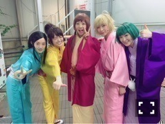

| 2016/05 24 Tue | じょしらくロスヽ(・∀・)ノ |

見て〜ヽ(・∀・)ノ
このみんなの笑顔！！
本当に楽しかったからか、自然に心から湧き出てきた気持ち！！
じょしらく、
ガンちゃん演じられて本当によかった！！
私にとって、
じょしらくは挑戦でした。
自分は演技経験が全然無いし、
コープスパーティーの撮影もあるって知ってたし、
いろいろやりきれるのか、
そもそも私に舞台を作れる力があるのか
それすらわからないから、
本当に不安で仕方がなかった！
でも、じょしらくやりますかってなった時に
私には参加するという選択肢しかなかったし、
むしろ、不安なくせにワクワクしている自分がいました。
だって、
アイアシアターを5人で埋めるなんて、
もう二度と出来ないかもしれない凄い機会だし
それに、毎日頭がパンクしちゃうくらい
動いていた方が自分の為になる！
舞台って、非日常を生きれるからいいよねっ！！
とかとか私は、毎日稽古に行くのが楽しみでしょうがなかった！！
私を応援して下さってる皆さんは、私はお芝居苦手だ〜とかいろいろ弱いところがあるって知っていると思いますが、
安心して下さい！
もう、すっかりその私は居ません！！
だから、これからは、なんの心配もせずに観ていただけたら嬉しいですヽ(・∀・)ノヽ(・∀・)ノ
また、舞台に立てたらいいなぁ。
夢ですね(^-^)
現実にしたい夢！！
目標！！ヽ(・∀・)ノ
頑張ります！！！
最後に！
じょしらくを観に来て下さった皆様本当にありがとうございました！
お客様がいないと、舞台は開きません！
あたたかい拍手や、声援ありがとうございます！
スタッフの皆さん！
皆さんにいろんな事を教えてもらいました！！
演出の川尻さんは、本当に素敵なパイセンっす！！
また川尻さんの演出する舞台に立てる人間なりたいです！
あと、いろいろじょしらくのスタッフさんのお力のお陰で、私、歌のコンプレックスも薄まって来ました！
本当にありがとうございます(´；ω；｀)⭐️⭐️
そして、
チームら！
愛してるよ！！
あとは、今度の集まりでね〜ヽ(・∀・)ノ
語ろう

あと！！
今日は六つ子のお誕生だよ〜ヽ(・∀・)ノヽ(・∀・)ノ
結局、イベント行けないから、ささやかながら、
私はお家でアニメ再生しながら、十四松の祭りをまわしながら、お祝いしてますね

へばなっ☆彡
コメント(473)
2016/05/24 16:30